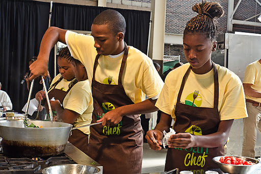
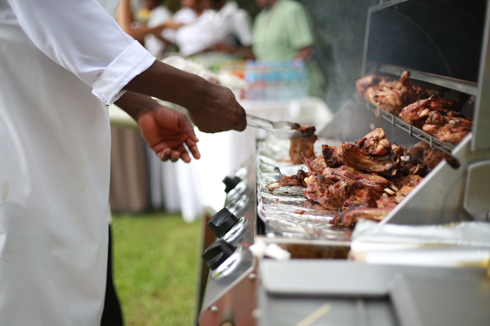

OUR HISTORY
In 2007, a young girl had some problems with customer service at a
restaurant during her birthday lunch; but she knew there was always a better way out.
Coupled with her passion for cooking and hospitality,
she decided to cater for the food needs of people in a better way and this resulted in Eddie's Palace.
The name is derived from the owners - Edwina and Edwin - of this company.
Currently, Eddie's Palace takes orders for events and personal reasons.

VISION
Due to our quest for excellence and ultimate customer satisfaction, we strive to
- Cater for the food needs of the people with their health in mind
- Provide quality catering services for every occassion.
- Partner with customers and communities in solving existing problems,
especially thoose related to food insecurity.
- Educate anyone interested in catering and hospitality.
MISSION
We seek to achieve our vision by
- Providing an appropriate work environment for our staff and patners to maximize efficiency.
- Encouraging our customers to eat well
- Ensuring that we are abreast with any novel technology that enables us to make our services better.
- Making sure our staff are highly trained to provide quality, customer satisfying services.
- Encouraging anyone interested in food

OUR VALUES
Here at Eddie's,
- Excellence
- Integrity
- Honesty
- Teamwork
- Accountability
are highly upholded